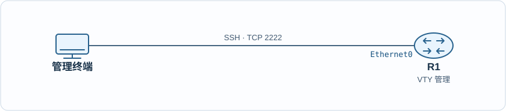

STelnet、VTY 与 SCP
STelnet 通过 SSH 提供远程 CLI。VTY 管理远端会话数量和空闲超时。SCP 可以使用同一 SSH 端口上传和下载文件。两个服务默认关闭，可分别开启。
工作原理
AAA 的 privilege level 决定用户的 CLI 权限。远程访问需要在 AAA 里允许 ssh，再在系统视图建立 SSH 用户并分配服务。service-type stelnet 允许远程 CLI，service-type scp 允许文件传输，service-type all 允许两者。SCP 不占用 VTY。
配置与验证
拓扑

配置条件
先检查管理地址与回程路由，准备具备 SSH 登录权限的账户，并保留 Console。配置非默认端口时同时调整管理路径上的访问规则。
配置步骤
system-view
aaa
local-user vortexros privilege level 3
local-user vortexros service-type terminal ssh
quit
ssh user vortexros
ssh user vortexros authentication-type password
ssh user vortexros service-type stelnet
stelnet server enable
ssh server port 2222
user-interface maximum-vty 5
user-interface vty
idle-timeout 10
quit
commit
return
display users
display aaa user vortexros
在另一终端以 SSH 实际登录后执行 save。display users 显示 Console、VTY、远端地址和会话状态。display ssh user login-info failed 或 display ssh user vortexros login-info succeeded 可按结果和用户查询。
验证方法
对照以下命令和预期结果核对设备状态。
display users
display process tcp listen
display ssh server status
display ssh user-information vortexros
display ssh user login-info succeeded
确认端口 2222 处于监听状态。从另一终端登录后，VTY 行应显示 SSH、远端地址和用户名。通过后执行 save。
为同一用户开启 SCP
在 Console 进入系统视图，将该用户的 SSH 服务设为 all，并独立开启 SCP。
system-view
ssh user vortexros service-type all
scp server enable
commit
return
display ssh server status
display ssh user-information vortexros
预期两个服务器字段都显示 Enable，用户的 Service type 显示 stelnet | scp。在管理终端使用 scp -O 选择 SCP 协议。以下命令假定设备的管理地址为 192.0.2.1、监听端口为 2222，并且本机存在 test.txt。
scp -O -P 2222 test.txt vortexros@192.0.2.1:./test.txt
scp -O -P 2222 vortexros@192.0.2.1:./test.txt test-returned.txt
cmp test.txt test-returned.txt
文件传输使用该账户的 Linux 文件权限。相对路径从账户家目录解析。执行 undo scp server enable 并提交后，新 SCP 请求会被拒绝。STelnet 和 SCP 都关闭时，SSH 停止监听。 OpenSSH scp 手册
命令回显实测节选
启用 SCP、保持 STelnet 关闭时，设备的端口和服务状态如下。管理终端上传文件并下载到另一文件名，两份文件的 SHA-256 一致。
<VortexROS> display ssh server status
SSH version : 2.0
SSH server port : 2222
STelnet server : Disable
SCP server : Enable
r5 实测两把公钥均能建立管理会话。成功记录的 Method 为 publickey。另一次 SSH 请求使用有效公钥，但请求执行远程命令，历史将该会话记为 failed 并保留原因。
<VortexROS> display ssh user vortexros login-info succeeded
Time Source User Method Result Reason
2026-11-26 09:45:24 UTC 10.0.2.2:25906 vortexros publickey succeeded Management session opened
2026-11-26 09:45:23 UTC 10.0.2.2:25904 vortexros publickey succeeded Management session opened
<VortexROS> display ssh user vortexros login-info failed
Time Source User Method Result Reason
2026-11-26 09:45:24 UTC 10.0.2.2:25918 vortexros publickey failed remote commands are not supported
注意事项
变更端口、权限或升级前保留 Console。旧配置依赖隐式 SSH 访问时，升级后从 Console 配置 AAA 服务、SSH 用户和服务器开关，再用一条新 SSH 会话验证并保存。公钥认证可以用 authentication-type rsa 或 authentication-type ed25519 配合对应类型的命名公钥。